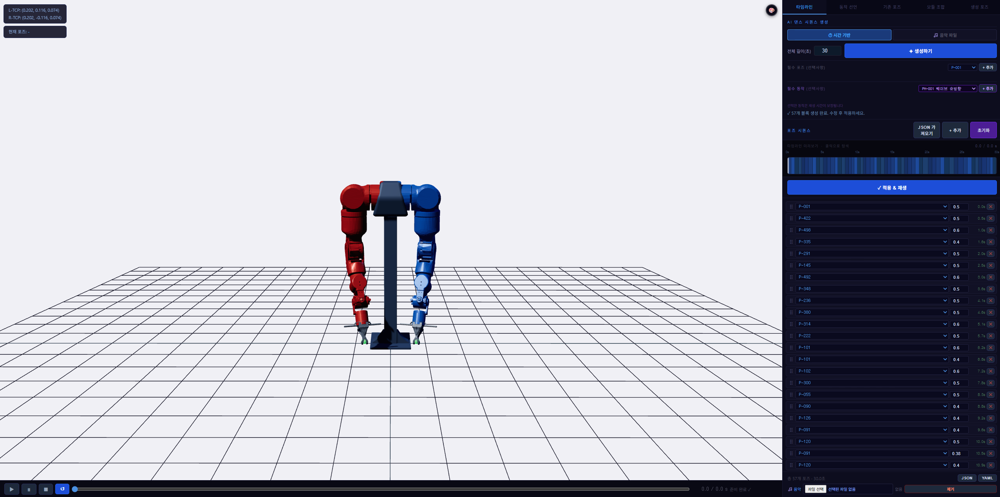
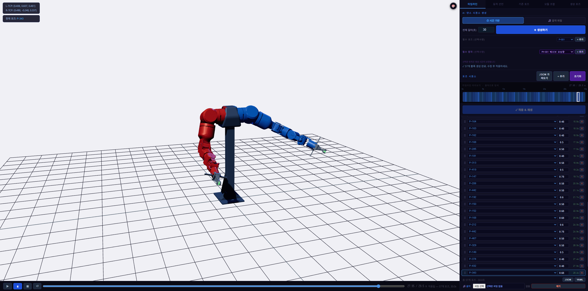
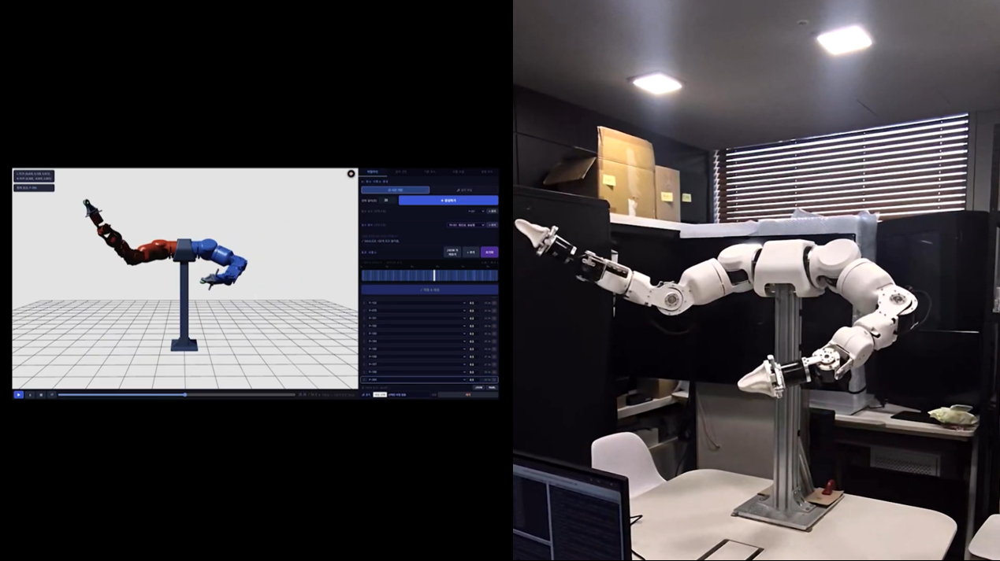
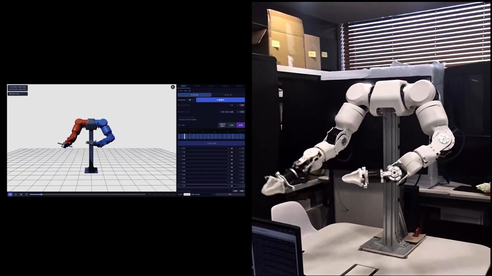
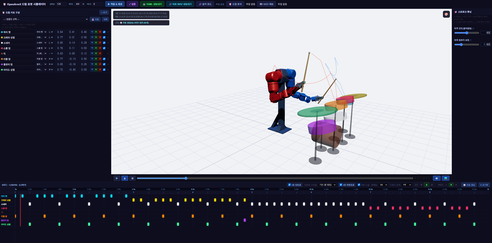
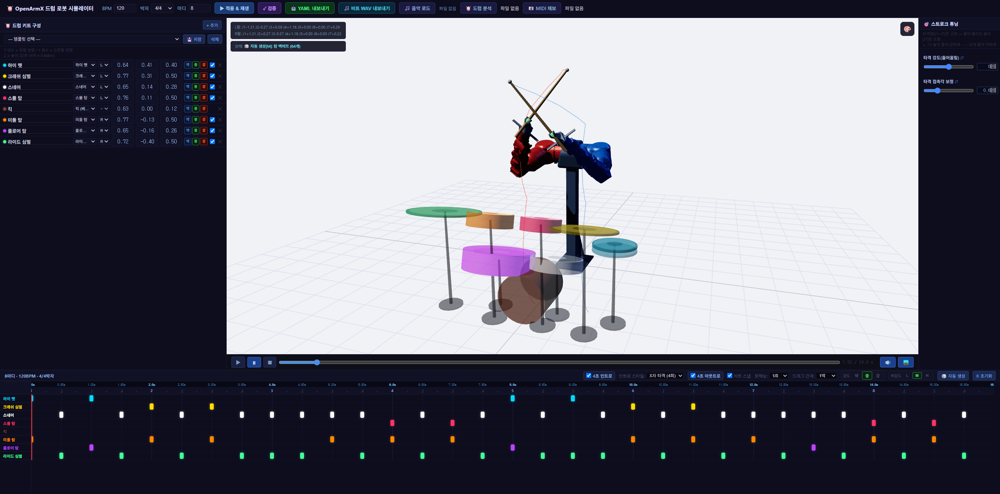

AI 구현 · ROS2 · 로보틱스
양팔 로봇의 모션을 설계하는 시뮬레이터를 구현하고 실제 로봇에서 검증했습니다.
프로젝트양팔 로봇 모션 시뮬레이터
역할로보틱스 학습 · 모션 구조 설계 · 시뮬레이터 구현
구현 범위14개 조인트 · 모션 시퀀스 · 드럼 연주 확장
AI 개발 도구로 로보틱스를 학습하며 14개 조인트를 다루는 브라우저 시뮬레이터를 만들었습니다.
시뮬레이터에서 설정한 조인트 값과 자세를 실제 양팔 로봇에 그대로 적용해 동작까지 검증했습니다.
화면에서 확인한 자세를 실제 로봇에 적용하는 5단계로 구현했습니다.
01동작 목표와 기준 자세 정의
02양팔 14개 조인트를 조정해 기준 자세 구성
03자세의 순서와 재생 시간을 설정해 모션 시퀀스 구성
04브라우저 시뮬레이터에서 자세와 모션 재생 흐름 확인
05실제 양팔 로봇에 조인트 값을 적용해 자세와 동작 검증




댄스에서 드럼 연주로 위치와 타이밍을 함께 맞추는 동작으로 실험을 확장했습니다.


처음에는 14개 조인트로 자세를 구성해 댄스 모션을 재생하는 데 그쳤다면, 이후 드럼 세트와 양팔의 타격 순서·재생 타이밍을 더해 정해진 위치와 시점까지 맞춰야 하는 동작으로 고도화했습니다.
실제 로봇 적용 전에 화면에서 자세와 모션 흐름을 먼저 확인했습니다.
조인트 값을 곧바로 실제 로봇에 적용하지 않고 브라우저에서 자세와 모션 흐름을 먼저 확인했습니다. 화면에서 팔의 방향과 동작 순서를 조정한 뒤 실제 로봇에 적용해 시행착오를 줄였습니다.
조인트 값뿐 아니라 순서와 시간을 모션의 단위로 정의했습니다.
하나의 자세만 만드는 데 그치지 않고, 여러 자세가 정해진 순서와 시간에 따라 이어지도록 구성했습니다. 댄스와 드럼 타격을 모두 다룰 수 있도록 조인트 값, 자세 순서, 재생 시간을 하나의 모션 단위로 정의했습니다.
드럼 연주를 확장 시나리오로 선택해 위치·타이밍 정확도까지 검증했습니다.
댄스는 자세 순서만 맞으면 자연스러워 보이지만 드럼은 정확한 위치에 정확한 시점으로 도달해야 소리가 나 훨씬 엄격한 기준이 됩니다. 이 차이를 활용해 모션 설계가 실제로 정밀한 동작까지 재현하는지 확인했습니다.
노트북 화면에서 시작한 실험이 실제 로봇 동작까지 이어지는 환경을 완성했습니다.
하드웨어 손상 없이 자유롭게 실험 가능
여러 자세와 동작을 화면에서 마음껏 시도한 뒤 안전하게 실제 로봇에 적용
하나의 모션 구조로 댄스·드럼 모두 대응
새로운 동작을 추가할 때마다 설계를 다시 하지 않고 같은 모션 단위를 재사용
시뮬레이터 설계값으로 실제 로봇 동작 검증
화면에서 설계한 자세와 모션을 실제 양팔 로봇에서 그대로 재현 확인
위치·타이밍까지 맞추는 드럼 연주로 확장
댄스를 넘어 목표 지점과 시점을 함께 맞추는 동작으로 실험 범위 확장